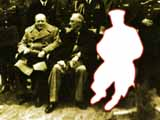

- documentary -
. On exhibit will be their selected images of "self," which emphasize the ways queer youth are often represented and the ways they choose to represent themselves. Friday's events take place at the Center for Documentary Studies, 1317 W. Workshops Your choice of workshops on a variety of topics, including Television and the Independent Producer and Documenting Faith in the South. Workshops are taught by film and video faculty from universities statewide as well as independent producers and filmmakers from the region.
 |
Cineast Harun Farocki, co-editor with Bitomsky of the magazine Filmkritik, will also participate. Themes will include the relationship between theory, analysis and creativity. The Camcorder Not so long ago there were all kinds of complaints and attacks concerning the video documentary. How often did we hear that the 'real', serious, and professional documentary had to be on film. As dogmatic the discussion was, arguing has subsided. |
|
Issues like the fossil record, origin of life, thermodynamics, origin of man or biochemical systems are examined in detailed and the death of the Darwinist dogma is proved by comtemporary scientific evidence. This site includes the scientific miracles Allah revealed in the Qur'an 1,400 years ago, the mathematical miracles of the Qur'an and the information given in the Qur'an about the future. Colour photos and illustrations of hundreds of animals, amazing pieces of information, documentary films, and poster exhibitions about Harun Yahya's works. When you visit this site, you will see once again that it is Allah Who created all living and non-living things. This site portrays the wonders of creation in the plant kingdom. |
|  |
The selections in American Life reveal a variety of regional American values and identities and how they are evolving over time. These artists explore a rich array of American characters, from the oldest known living African-American lesbian to a Southern mother and daughter prying into their own family secrets, from the odd goings-on in a small Tennessee town to the graceful motions of an ordinary suburban lawn sprinkler. Re-Thinking Documentary includes works that recast the documentary genre, thereby turning the documentary's gaze on itself. Jill Godmilow remakes a 1969 German documentary by Harun Farocki about Dow Chemical's development of napalm-B during the Vietnam War, this time in color and in English. By condensing Alfred Hitchcock's 1945 film Spellbound from 111 minutes to just under eight minutes, LeVeque transforms Hitchcock's trademark slow-paced suspense-building into a rushing sense of the inevitable. |
A good documentary site: http://www.claremont.org/index.cfm